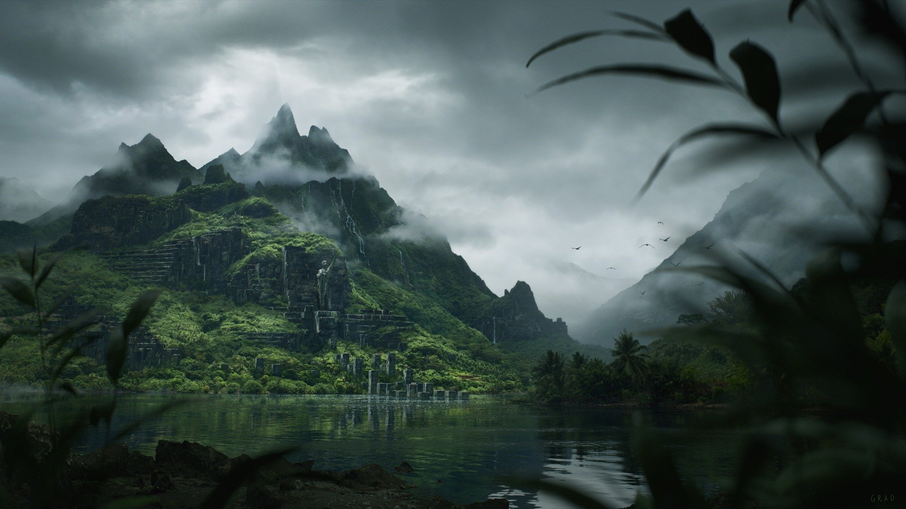

Летние острова
Ле́тние острова́ — крупный архипелаг в Летнем море, лежит к югу от Вестероса и населен чернокожим народом летнийцев. Летнийцы говорят на своём языке, а в одежде предпочитают плащи из разноцветных перьев.В составе этого архипелага, где вовсю буйствует зелень – свыше полусотни островов. Они омываются Закатным морем на западе от Летнем на востоке. Насколько можно судить по историческим записям летнийцев, они издавна жили обособленно от остального человечества.
